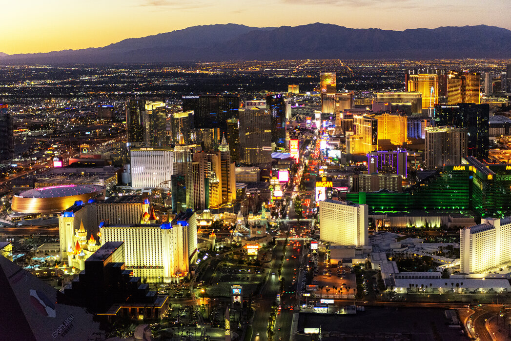

Urban Design: Exploring the City Through Art
Favorite Locations for Art Designers
What Is Responsive Design?

Responsive design allows a website to adjust to different screen sizes, including computers, tablets, and smartphones. It makes websites easier to use and navigate on any device.
Exploring Urban Design

Urban Sketchers Meetup brings people together to explore city streets, buildings, parks, and public spaces through drawing. Artists can share sketches, discover new places, and improve their artistic skills.
Creating a Better User Experience

A responsive website makes it easy to explore artwork and read information on any device. Flexible images, organized layouts, and readable text help visitors enjoy the website anywhere.